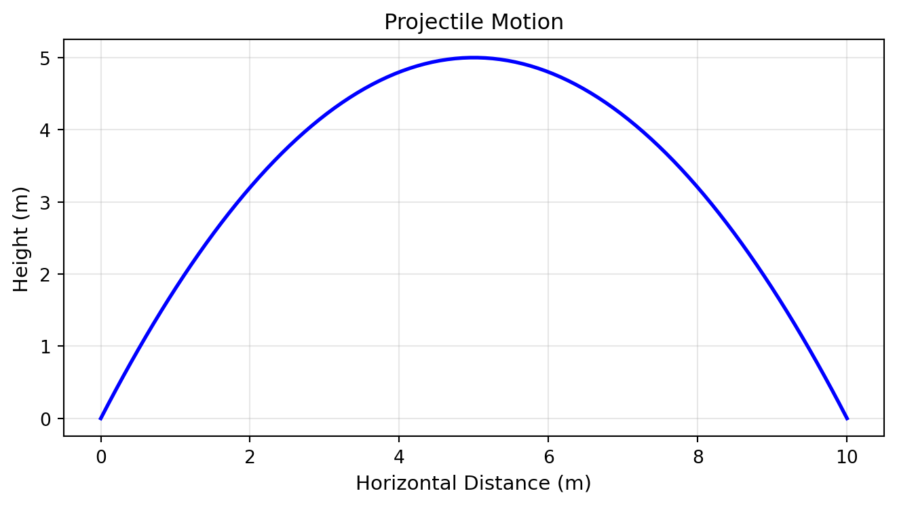

Getting Started with Jupyter Notebooks
Why Jupyter? 🚀
As physicists, we need to:
- Calculate results from equations
- Visualize data and theoretical predictions
- Document our work with equations and explanations
- Share reproducible results with colleagues
Jupyter Notebooks let us do all of this in one place!
What is a Jupyter Notebook?
A Jupyter Notebook is a web-based interactive document that combines:
- Code (Python) that you can run
- Results (numbers, plots, animations)
- Documentation (text, equations in LaTeX)
Think of it as a digital lab notebook for computational physics.
Key Advantage
Unlike traditional programming where you write everything first and then run it, Jupyter lets you experiment interactively - run small pieces of code, see results immediately, and build up your solution step by step.
Opening Jupyter Lab
Option 2: Command Line
Open terminal and type:
jupyter lab
Troubleshooting
If Jupyter doesn’t start, check: - Anaconda is installed - You’re connected to the internet (first time only) - Try restarting Anaconda Navigator
JupyterLab Interface
When JupyterLab opens, you’ll see:
- Left sidebar: File browser (like Windows Explorer/Finder)
- Main area: Where notebooks open
- Launcher tab: Click “Python 3” under Notebook to create a new notebook
Try It Yourself (Embedded Demo)
Here’s a live JupyterLab environment you can experiment with:
Creating Your First Notebook
- Click Python 3 tile under “Notebook” in the Launcher
- A new tab opens with an empty notebook
- Save it: File → Save Notebook As… →
physics_week1.ipynb
File Extension
Jupyter notebooks end in .ipynb (IPython Notebook)
Two Types of Cells
Jupyter notebooks consist of cells - individual blocks that contain either code or text.
Code Cells (Default)
- Write Python code here
- Run to see results
- Identified by
[ ]:on the left
Markdown Cells
- Write notes, explanations, equations
- Use for documentation
- Change a cell to Markdown: Click cell, then press
Mkey
Your First Calculation 🎯
Let’s calculate gravitational potential energy!
Physics
\[E_{\text{pot}} = mgh\]
Code
Type this in your first cell:
# Gravitational potential energy
m = 2.0 # mass in kg
g = 9.81 # gravity in m/s²
h = 10.0 # height in m
E_pot = m * g * h
print(f"Potential energy: {E_pot} J")Run It!
- Click the ▶ button (top of cell), OR
- Press
Shift + Enter(run and move to next cell), OR - Press
Ctrl/Cmd + Enter(run and stay)
You should see: Potential energy: 196.2 J
Pro Tip
Shift + Enter is the most common way to run cells - you’ll use this constantly!
Essential Keyboard Shortcuts
You’ll save tons of time with these shortcuts:
Running Cells
| Shortcut | Action |
|---|---|
Shift + Enter |
Run cell and move to next |
Ctrl/Cmd + Enter |
Run cell and stay |
Cell Operations (press Esc first to enter command mode)
| Shortcut | Action |
|---|---|
B |
Insert cell below |
A |
Insert cell above |
D D |
Delete cell (press D twice) |
M |
Change to Markdown cell |
Y |
Change to Code cell |
Z |
Undo delete |
Editing
| Shortcut | Action |
|---|---|
Enter |
Enter edit mode |
Esc |
Exit edit mode (command mode) |
Two Modes
- Edit mode (green border): Type in cell
- Command mode (blue border): Use keyboard shortcuts
Press Esc to switch to command mode, Enter to switch to edit mode.
Try It: Multi-Step Calculation
Let’s calculate the time for a ball to fall from height h.
Physics: \(h = \frac{1}{2}gt^2\) → \(t = \sqrt{\frac{2h}{g}}\)
Your Task:
- Create a new cell below (press
B) - Type this code:
import numpy as np # We need square root
h = 10.0 # height in m
g = 9.81 # gravity in m/s²
t = np.sqrt(2 * h / g)
print(f"Fall time: {t:.2f} seconds")- Run it! (
Shift + Enter)
Adding Documentation with Markdown
Good physics notebooks explain what you’re doing!
Create a Markdown Cell
- Insert a new cell above your code (press
Esc, thenA) - Change it to Markdown (press
M) - Type:
## Free Fall Calculation
We calculate the time for an object to fall from height $h = 10$ m.
The equation is:
$$t = \sqrt{\frac{2h}{g}}$$
where $g = 9.81 \, \text{m/s}^2$ is gravitational acceleration.- Run the cell (
Shift + Enter) to render it
LaTeX Equations
- Inline equation:
$E = mc^2$→ \(E = mc^2\) - Display equation:
$$E = mc^2$$→ \[E = mc^2\]
Your First Plot! 📊
Now let’s visualize physics! This is where Jupyter really shines - you can see your calculations come to life.
Plotting a Falling Ball
Let’s plot the height of our falling ball over time. Don’t worry about understanding every detail - just see how easy it is to create beautiful graphs!
Create a new cell and type:
import matplotlib.pyplot as plt
import numpy as np
# Calculate fall time
h = 10.0
g = 9.81
t_fall = np.sqrt(2 * h / g)
# Create time points from 0 to landing
t = np.linspace(0, t_fall, 50)
# Calculate height at each time: h = h0 - (1/2)gt²
height = h - 0.5 * g * t**2
# Create the plot
plt.plot(t, height, 'b-', linewidth=2)
plt.xlabel('Time (s)')
plt.ylabel('Height (m)')
plt.title('Ball Falling from 10m')
plt.grid(True, alpha=0.3)
plt.show()Run it! You just created your first physics visualization! 🎉
What Just Happened?
matplotlib.pyplotis Python’s plotting librarynp.linspace(0, t_fall, 50)creates 50 evenly-spaced time pointsplt.plot()draws the curve- The labels and grid make it look professional
Don’t memorize this yet - we’ll cover all the details in Lecture 4. For now, just enjoy seeing your calculation as a graph!
Challenge: Plot Velocity
The velocity increases as the ball falls: \(v = gt\)
Try modifying the code to plot velocity vs time instead!
Solution
# Calculate velocity at each time point
velocity = g * t
plt.plot(t, velocity, 'r-', linewidth=2)
plt.xlabel('Time (s)')
plt.ylabel('Velocity (m/s)')
plt.title('Velocity of Falling Ball')
plt.grid(True, alpha=0.3)
plt.show()Notice how velocity increases linearly - exactly what the equation predicts!
Saving Your Work
Now that you know the basics:
- Later: Advanced Plotting Techniques
- Multiple plots, logarithmic scales, 3D plots, animations, and more
- Build on what you just learned!
- Next: Variables & Numbers
- Understand Python fundamentals in detail
- Learn about data types, operations, and more
Jupyter auto-saves every few minutes, but you should also:
- Manual save:
Ctrl/Cmd + Sor File → Save Notebook - Download: File → Save and Export Notebook As → HTML/PDF
Important!
Saving the notebook saves your code and markdown, but also the output. If you want a clean notebook, do: Kernel → Restart Kernel and Clear All Outputs before saving.
What’s Next? 📊
Now that you know the basics:
- Next lesson: Plotting Your First Graph
- You’ll create beautiful physics visualizations
- Then: Variables & Numbers
- Understand what you just used in detail
Quick Reference Card
Most Important Commands
Shift + Enter → Run cell
Esc + B → New cell below
Esc + M → Change to Markdown
Esc + D D → Delete cell
Ctrl/Cmd + S → SaveGetting Help
- Function help: Type
?function_namein a cell and run - Documentation: Press
Shift + Tabwhile cursor is on a function name
Advanced Topics (Optional)
What is a Kernel?
The kernel is the computational engine that runs your code. Think of it as Python running in the background.
Kernel indicator (top-right):
- ⚪ Idle: Ready to run code
- ⚫ Busy: Currently executing
Kernel menu operations:
- Restart Kernel: Clears all variables, starts fresh
- Interrupt Kernel: Stops long-running code
You’ll need to restart if:
- Variables get messy
- Code is stuck in an infinite loop (interrupt first, then restart)
- You want a clean slate
Markdown Cheatsheet
# Heading 1
## Heading 2
### Heading 3
**bold text**
*italic text*
- Bullet list
- Another item
1. Numbered list
2. Another item
[Link text](https://www.example.com)
Inline code: `x = 5`
Equation: $E = mc^2$
Display equation:
$$\frac{-b \pm \sqrt{b^2 - 4ac}}{2a}$$
Complete Jupyter Documentation
For more advanced features (magic commands, debugging, widgets), see:
Summary ✅
You’ve learned:
- ✓ What Jupyter notebooks are and why they’re useful for physics
- ✓ How to open JupyterLab and create a notebook
- ✓ The difference between code and Markdown cells
- ✓ How to run code and see results
- ✓ Essential keyboard shortcuts
- ✓ How to document your work with equations
You’re ready to start plotting! Move on to the next lesson.
Practice Exercise
Before the next class, try this:
- Create a new notebook called
practice.ipynb - Calculate the kinetic energy of a 1000 kg car traveling at 30 m/s
- Use a Markdown cell to write the equation: \(E_k = \frac{1}{2}mv^2\)
- Print the result in Joules
- Bonus plotting challenge: Plot how kinetic energy changes with velocity
- Use velocities from 0 to 40 m/s
- Hint: Copy and modify the falling ball plotting code!
- Save your notebook
Solution: - Energy at 30 m/s: 450,000 J (or 450 kJ) - The plot should show a parabolic curve (energy ∝ v²)